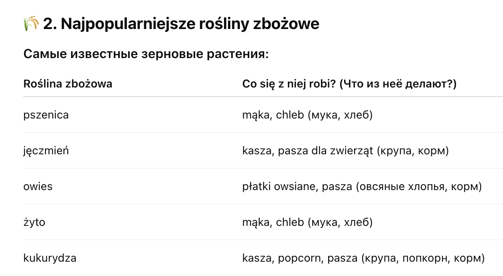

Przyroda > Swiat roślin > Rośliny zbożowe
Swiat roślin
🌾 Rośliny zbożowe
(Зерновые растения)
🌱 1. Co to są rośliny zbożowe?
Что такое зерновые растения?
Rośliny zbożowe — это растения, которые дают zboże (зерно). Из зерна делают chleb, kaszę, mąkę i inne produkty spożywcze (хлеб, кашу, муку и другие продукты).

🌿 3. Jak rosną rośliny zbożowe?
-
Как растут зерновые?
- Ludzie siewają ziarna na polach
- Rośliny rosną i dają kłosy z ziarnem
- Po dojściu plonu zbiera się zboże i przetwarza na jedzenie
🍞 4. Dlaczego rośliny zbożowe są ważne?
-
Почему зерновые важны?
- Dostarczają nam mąkę i chleb – podstawę codziennego jedzenia
- Są ważne dla produkcji kasz i płatków śniadaniowych
- Zboża są też pożywieniem dla wielu zwierząt